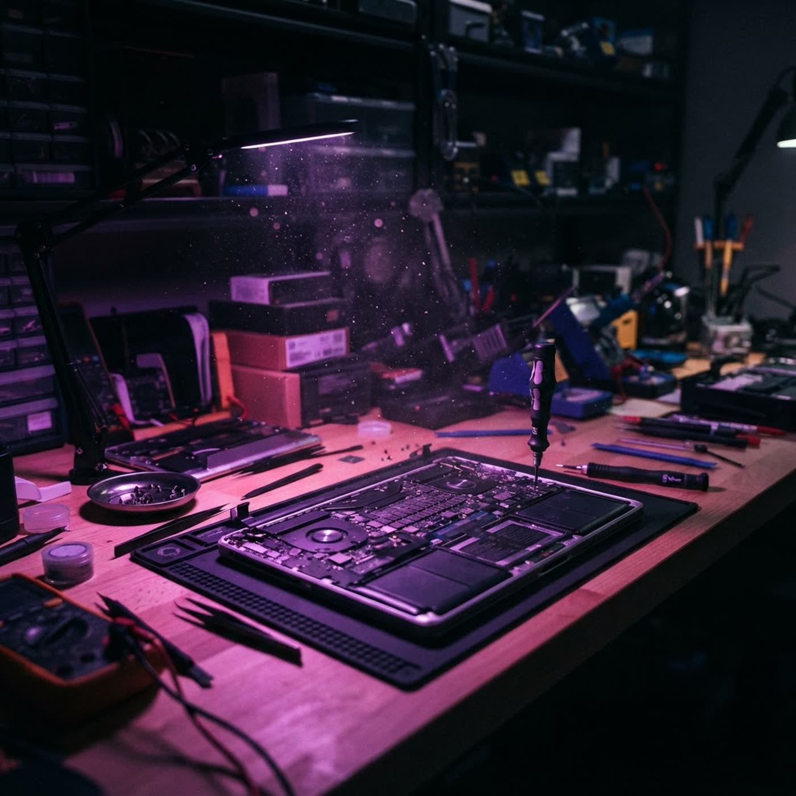

Брест · выезд 24/7 · гарантия до 12 месяцев
Ноутбук не включается? Запустим систему заново
VENCHESTER — компьютерный сервис в Бресте. Мастера выезжают к вам домой или в офис в любое время суток, диагностика бесплатна при ремонте, запчасти со своего склада — без недель ожидания.
24/7 выезд0 BYN диагностика при ремонте12 мес гарантияФиз + юр лица
venchester://diagnostics — выберите симптом
Что чиним
От «синего экрана» до замены материнской платы
Список из объявления, без «спросите у менеджера». Если вашей проблемы тут нет — позвоните, скажем сразу, берёмся или нет.
Симптомы
- Компьютер или ноутбук не включается
- Перегревается и шумит
- Зависает, работает медленно
- Не заряжается или не держит батарею
- Проблемы с клавиатурой, экраном, портами, Wi-Fi
- Ошибки Windows или macOS
- «Синий экран смерти»
- Нужна установка SSD, памяти, ОС и программ
Работы
- Ремонт и замена экрана, клавиатуры, корпуса
- Чистка от пыли и замена термопасты
- Ремонт или замена материнской платы, разъёмов, блока питания
- Установка Windows, macOS, драйверов и антивирусов
- Восстановление после залития или падения
- Апгрейд для ускорения работы
- Ремонт после падений и ударов
- Настройка под юрлица и офисы
Почему выбирают VENCHESTER
Пять причин позвонить именно нам
Мы уже много лет помогаем ноутбукам и компьютерам вернуться к жизни, а клиентам — сэкономить время и нервы.
01
Бесплатная диагностикаПри ремонте — не берём денег за поиск причины.02
Срочный выездПриедем и починим тогда, когда это нужно вам.03
Гарантия до 12 месНа все виды работ, письменно.04
Опыт и оборудованиеСовременная техника для пайки и восстановления данных.05
Свой складЗапчасти на месте — без долгого ожидания.
Как мы приезжаем
Выезд 24/7 — домой или в офис
Не нужно везти технику в сервис: мастер приедет сам, в удобное вам время. А если удобнее у нас — ждём в кабинете на Луцкой.
01
Звонок и описаниеРасскажите симптом: не включается, шумит, не держит батарею. Сразу скажем, что вероятно и когда приедем.
02
Диагностика на местеПри ремонте — бесплатно. Мастер привозит инструмент и типовые запчасти со склада.
03
Ремонт и проверкаЧиним на месте или забираем в кабинет, если нужна пайка. Возвращаем рабочую технику с гарантией.
Адрес кабинетаБрест, ул. Луцкая, 56-7
График кабинета10:00–20:00
Выходныебез выходных
Выезд к клиенту24/7
Кому помогаемфиз. и юр. лица
Диагностикабесплатно при ремонте
Гарантиядо 12 месяцев
Вопросы
Что спрашивают перед вызовом
Не нашли ответ — позвоните, разберёмся по телефону.
Диагностика действительно бесплатная?+
Да, если вы соглашаетесь на ремонт — за поиск причины не платите. Если от ремонта отказываетесь, стоимость диагностики обсудим заранее по телефону, до выезда.
Как быстро вы приедете в Бресте?+
Выезд работает круглосуточно. Точное время назовём по телефону: зависит от загрузки мастеров и района — скажите адрес, и мы сориентируем.
Ремонтируете на месте или забираете технику?+
Большую часть работ делаем на месте: чистка, замена термопасты, установка Windows, SSD и памяти, настройка. Если нужна пайка или сложный ремонт платы — забираем в кабинет и держим в курсе.
Есть ли запчасти в наличии?+
У нас свой склад запчастей: типовые экраны, клавиатуры, батареи, разъёмы и SSD обычно есть сразу — поэтому не ждём поставок неделями.
Работаете с организациями?+
Да, работаем с физическими и юридическими лицами: обслуживаем офисы, настраиваем технику, выезжаем по заявке. Формат сотрудничества обсудим по телефону.
Даёте гарантию на работы?+
Гарантия до 12 месяцев на все виды работ — конкретный срок зависит от типа ремонта и запчасти, фиксируем его при выдаче.